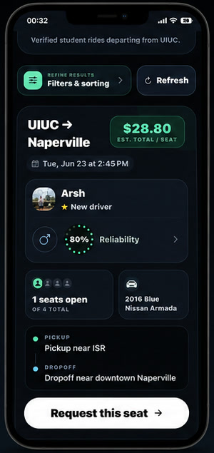
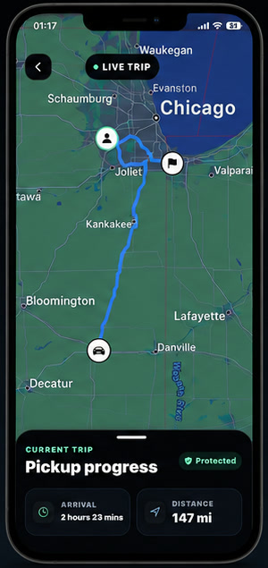
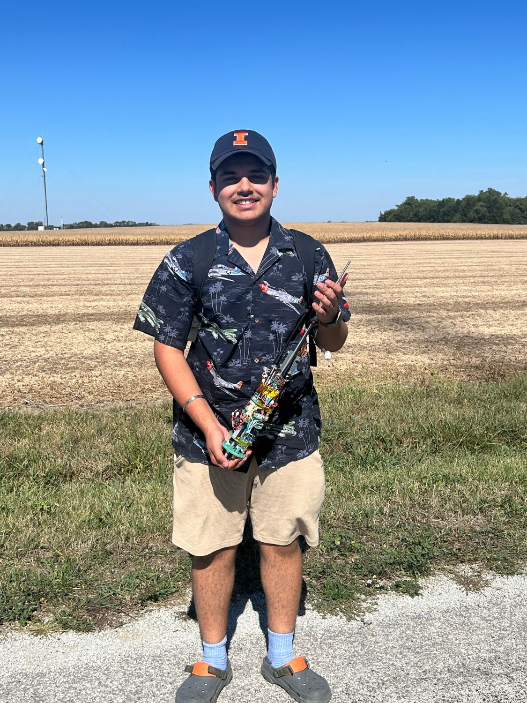
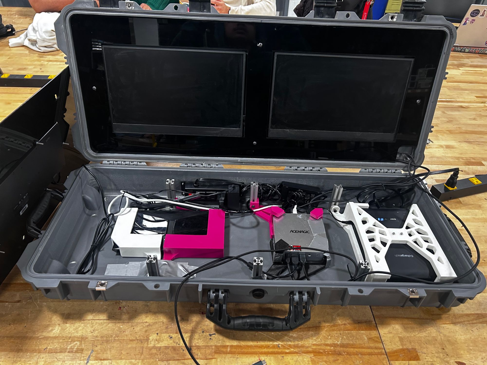
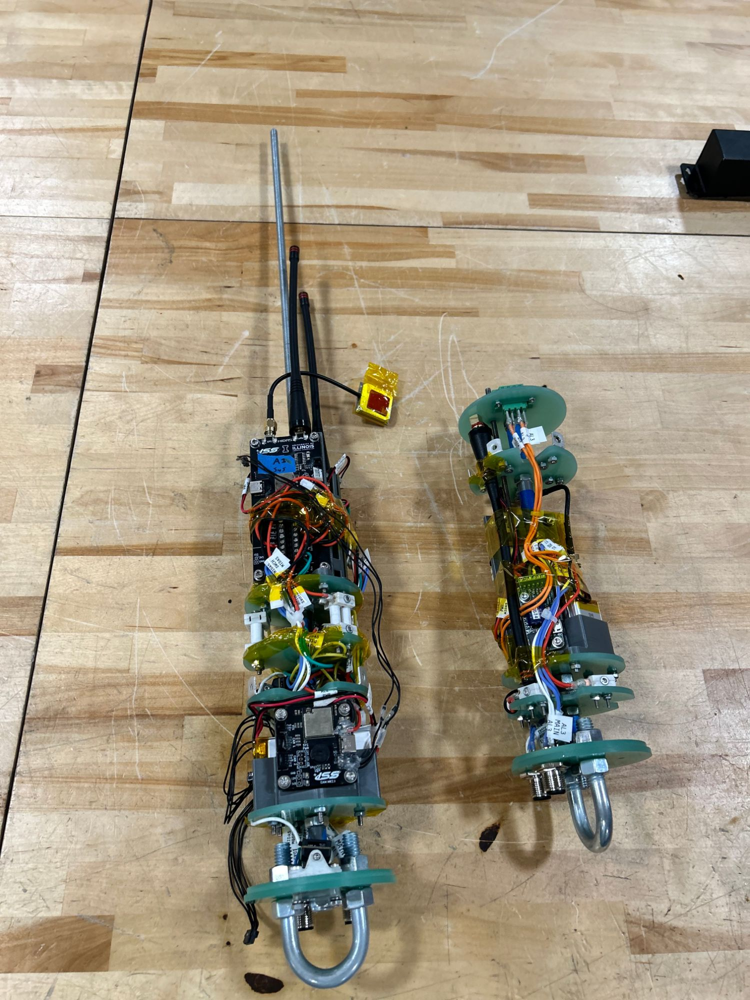
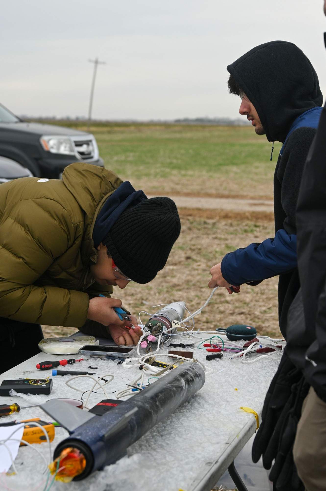
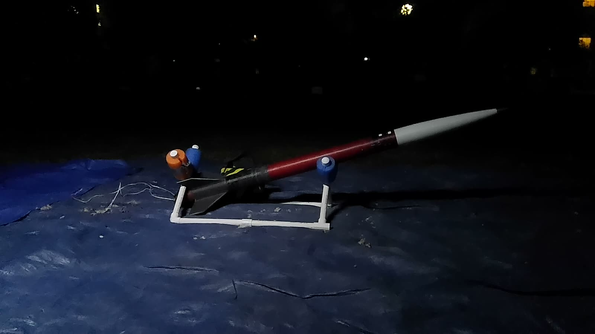

HomeTern
- Role
- Founder
- When
- Jun 2026 to now
- Built
- Student ridesharing app. React Native, Node/Express, Postgres on Supabase, Stripe Connect, ID verification.
- Status
- In development, early testing

I build, integrate and test flight hardware. Right now I lead the ground station that talks to our two-stage rocket.
I'm an aerospace engineering student at the University of Illinois Urbana-Champaign. I want to work where engineers own hardware from CAD through integration and test: vehicle integration, avionics, ground support equipment, spacecraft hardware.
A visit to a Boeing 747 cockpit on a Frankfurt to Calgary flight. That was it.
Royal Canadian Air Cadets, Calgary. Ground school, navigation, familiarization flying. Reached Warrant Officer Second Class.
Joined Illinois Space Society, Spaceshot. Avionics structures on a two-stage sounding rocket.
Took over the ground station. Founded HomeTern that summer.
The ground station is the team's only live link to the rocket in flight. It has to receive telemetry from two stages on two independent radio channels, then survive a truck ride and a field.
I run the student team and own the mechanical side: CAD in Siemens NX, mounts, internal layout, harness routing, prototyping and bench tests. I also coordinate interfaces with the Avionics, Electrical, GNC and Software teams.
Aluminum T-slot frame, acrylic panels, 3D-printed mounts. Power hardware you can reach. Airflow across the computer. Clearance for the antennas. A composite redesign targets 20%+ less mass.
In progress. Not yet fully built or flight-validated.
Read the case studyGround Station LeadLeading the redesignSep 2026 to now

The real build, in progressBefore the ground station, I worked on the electronics that fly.


Here's how high they went.

At apogee, a charge has to fire and split the rocket so the parachute can come out.
Ground test of the ejection charge. Scroll to fire it.
13,000 to 14,000 feetto 14,000 ft
Approximate apogee of Luna, our two-stage student sounding rocket. A team result.
My part, as Avionics Structures Engineer, Sep 2025 to May 2026:
Software I taught myself, competition builds, and the years that started it.


Also part-time at Walmart Online Grocery Pickup since Jan 2026, alongside all of the above.
Only what I've used on real projects. No percentage bars.
| Mechanical | Siemens NX·3D CAD·Enclosure design·Electronics packaging·Structural integration·Prototyping·Design for assembly·Blender |
|---|---|
| Aerospace & avionics | Rocket avionics integration·TeleMega, MIDAS flight computers·Telemetry ground stations·RF integration·GPS & barometric sensors·Launch prep·Hardware troubleshooting |
| Electrical | Wire harnessing·Cable routing·Power distribution·LiPo integration·Connectors·Continuity testing·Bench testing·Thermal management |
| Software | Java·JavaScript·TypeScript·Python·React Native / Expo·Node.js / Express·PostgreSQL·Supabase·REST APIs·Git |
| Integrations | Stripe Connect·Mapbox·Twilio·Postman·ngrok·Google Cloud |
| Coursework | Statics·Physics: Mechanics, E&M·Calculus III·Differential Equations·Java·Aerospace Design·CAD with Siemens NX |